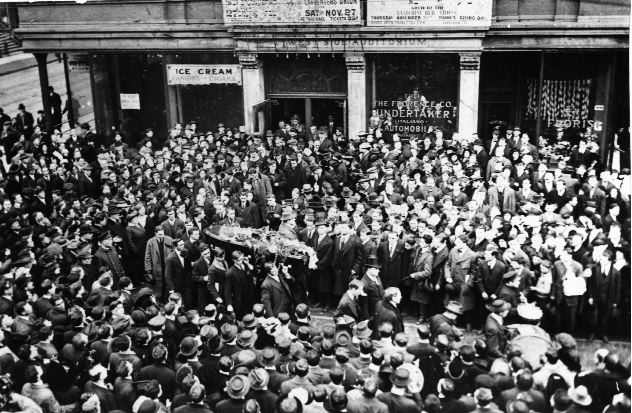

Submitted on Thu, 11/03/2005 - 6:13am
By Kim Scipes - from www.znet.org
Disclaimer - The following article is reposted here because it is an issue with some relevance to the IWW. The views of the author do not necessarily agree with those of the IWW and vice versa.
 Whoopee! The Change to Win Coalition has established itself in the labor movement! Happy Days are here again! Andy Stern's going to lead us to the promised land!
Whoopee! The Change to Win Coalition has established itself in the labor movement! Happy Days are here again! Andy Stern's going to lead us to the promised land!
And the overwhelming response by American workers: yawn.
At the time when American workers-indeed, US society as a whole-so much need a new labor center, to fight for economic and social justice, to challenge the policies of the Bush Administration, to challenge the worsening conditions for working people across the entire social order, and to challenge the US Empire overall, we get another AFL-CIO. Just under another name. Please excuse me while I am underwhelmed.
Steve Early, a leader of the Communications Workers of America (AFL-CIO), writing in the October issue of Labor Notes, summed up the new developments nicely:
Submitted on Wed, 11/02/2005 - 6:09am
By Chris Arsenault, Halifax - Industrial Worker, November 2005
 It's been more than eleven years since the Zapatistas of Chiapas, Mexico said 'ya basta' or 'enough' to neo-liberalism and initiated a struggle for self-determination.
It's been more than eleven years since the Zapatistas of Chiapas, Mexico said 'ya basta' or 'enough' to neo-liberalism and initiated a struggle for self-determination.
Today, the Zapatistas are creating a variety of participatory economic institutions to meet community needs: women's artisan co-ops, communal corn farming organizations, fair-trade coffee cooperatives and a non-sweatshop boot cooperative.
On a sunny day last year, myself and a delegation of foreign solidarity activists tramped the muddy hills around Oventic Caracole, in the Los Altos region, to visit the 1st of January boot co-op. Rafael Hedez, a leading activist with the co-op, and several other compañeros welcomed us with Cokes and bowls of snow-tire tough beef soup stewed on an open fire.
Inside the workshop, basically a barn with corrugated iron roof, one of the higher-end buildings in a region of thatched farm cuts, a dozen or so men busily cut leather, stick patterns and heat branding irons, large blue flames erupt as glue is melted to stick on the soles.
Submitted on Wed, 11/02/2005 - 6:01am
By Jon Bekken - Industrial Worker, November 2005
Every November we remember the rebel workers murdered by the employing class; a long list which grows longer every year. Fred Thompson used to speak of an IWW soapboxer whose rap went something like this: 'Workers are being fired for joining the IWW. Workers are being killed... Join the IWW.' It demonstrated, Fred used to say, a fine sense of solidarity but was not necessarily the best way to sign up new members.
The IWW has contributed more than its fair share of labor's martyr, because we have always been in the forefront of the struggle for workers' rights. By some accident of the calendar, many of our fellow workers have fallen in November, from the Haymarket Martyrs murdered Nov. 11, 1887, to the Nov. 4, 1936, death of FW Dalton Gentry, shot on an IWW picket line in Pierce, Idaho.
Some, like Joe Hill (killed Nov. 19, 1915) are famous; others, like R.J. Horton, largely forgotten. Fellow Worker Horton was shot down by a Salt Lake City cop Oct. 30, 1915, while giving a speech protesting the impending execution of Joe Hill.
Submitted on Wed, 11/02/2005 - 5:54am
By Jon Bekken - Industrial Worker, October 2005
 Hundreds of thousands of workers face untold misery after they were displaced by Hurricane Katrina, and the flooding that wrecked much of New Orleans in its aftermath. It may be months before many of those displaced from coastal Louisiana and Mississippi are allowed to return to what remains of their homes. However, things are looking much more promising for business. Owners of office space throughout the Gulf Coast region are doing record business; hotels are charging top dollar for shabby units; oil companies are enjoying windfall profits as the wonders of capitalism transform their damaged (and fully insured) refineries and drilling platforms into a price bonanza for energy suppliers.
Hundreds of thousands of workers face untold misery after they were displaced by Hurricane Katrina, and the flooding that wrecked much of New Orleans in its aftermath. It may be months before many of those displaced from coastal Louisiana and Mississippi are allowed to return to what remains of their homes. However, things are looking much more promising for business. Owners of office space throughout the Gulf Coast region are doing record business; hotels are charging top dollar for shabby units; oil companies are enjoying windfall profits as the wonders of capitalism transform their damaged (and fully insured) refineries and drilling platforms into a price bonanza for energy suppliers.
Stock prices for major contractors Halliburton and Baker Hughes - which also have been making out like bandits from the carnage of the Iraq war - skyrocketed as they joined in the scramble to profit off this tragedy. A Sept. 6 story in the New York Times celebrated the business opportunities, even as it cautioned that some "are wary about seeming too gleeful in light of New Orleans' misery."
Submitted on Wed, 11/02/2005 - 5:47am
By Jon Bekken - Industrial Worker, October 2005
 Northwest mechanics and cleaning crews remain solidly united as their strike against massive concessions that would cost most workers their jobs enters its second month. Unable to entice strikers to cross the picket lines, Northwest began hiring permanent replacements Sept. 13, and has contracted out nearly all of its cleaning work.
Northwest mechanics and cleaning crews remain solidly united as their strike against massive concessions that would cost most workers their jobs enters its second month. Unable to entice strikers to cross the picket lines, Northwest began hiring permanent replacements Sept. 13, and has contracted out nearly all of its cleaning work.
Delta and Northwest airlines filed for bankruptcy Sept. 14, after unions balked at the carriers' demands for another round of deep pay cuts, lay-offs and other concessions. While Northwest has said it will refuse to deal with the mechanics during the bankruptcy proceedings, this stance is illegal.
In the most recent round of contract talks, Northwest said it was willing to keep only 1,080 mechanics' jobs; most mechanics and all aircraft cleaner and custodian positions represented by the union would be outsourced, eliminating 3,181 positions that existed before the strike. Northwest had originally demanded "only" 2,000 lay-offs, so it is clearly feeling emboldened by the way other union workers have been waltzing across the mechanics' picket lines.